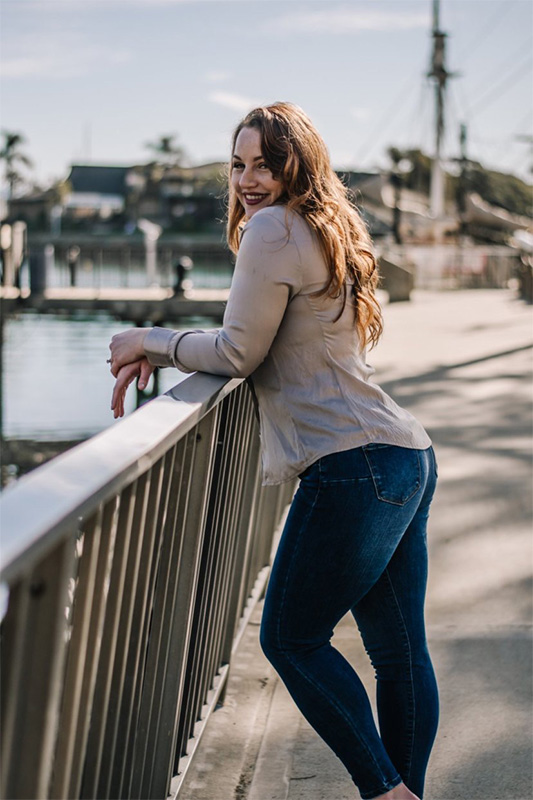

Portfolio
Earth Hands Website
This is a single-page website designed and developed for a potter, using semantic HTML, CSS, and JavaScript. The more technical focus was to implement certain JavaScript functions including light/dark mode, a contact form that returns the user's responses and/or errors, a number matching game, and a single item display section. More personally, I wanted the website to be cohesive and personality driven, as seen in the colors of clay and the fonts.
View ProjectAlive and Wandering Website
This is a vacation rental website designed and developed to showcase rental properties, allow date-searches for booking, and display weather for the cities where the rental properties are located. For the purposes of this project, only the home page was coded, however it has prompts for more pages. The intention was to design a page that felt comfortable and home-y to the site user, while implementing technical features- particularly using JavaScript- including web storage, a jQuery widget, an API, and an image carousel.
View ProjectGema Website Redesign
This is a full multipage responsive website re-design including pre- and post-production processes. The first steps included a project brief, mood board, and clarified branding. From there, the website pages and a sitemap were sketched out. Then the designs were prototyped in Figma. The intention of the redesign was to make the website more user- focused, accessible, usable, and professional, thus better reaching and drawing in the restaurant's intended “audience”.
View Project
Pinterest Redesign UI
This Pinterest user-interaction re-design prototype was developed through a detailed process, including: a creative brief with brand adherence details; a user-flow chart; a storyboard for the animation; and the prototype created in After Effects. The final prototype, as seen above, was rendered as a gif per project guidelines.
View ProjectClaire Sinagra Website
This is a fully responsive single-page website made for a children's author, which was created using HTML and CSS to match wireframes that were provided (the text was also provided). In addition to showing ability with semantic and responsive HTML and CSS, the site features SEO building through keywords, meta tags, linking, and twitter cards.
View ProjectCatalyst Creative Brief
This is a creative brief made for a video bumper / stinger commissioned by PBS Arizona's show Catalyst; a good example of a thorough and organized pre-production process step. It is two pages long and is intended to outline what is required for the project, to portray the tone and mission of the project and client, and to share branding guidelines such as fonts and colors. A creative brief is used as a point of reference while working on a project and can also be applied as a sort of contract between the designer and the client.
View ProjectEndless Summer Poster
Created solely in Adobe Illustrator for a music festival called Endless Summer, this poster was designed with the intention to promote the festival in a way that arouses nostalgia for those summer days and nights wherein people make memories that last a lifetime. Designed for print, the color space used was CMYK, the dimensions are 11x17” and the resolution of the document is 300ppi.
View ProjectAbout Me
Hi there!
My name's Maia. I'm an artist in many forms of the word: a songwriter, singer, and painter, to name a few; and recently, I've worked to take my passion and creativity further as I focus professionally on what I call "practical art"... front-end web design and development, and branding.
I recently graduated from Arizona State University, where I earned my bachelor's degree in Graphic Information Technology 100% remotely, with honors, through their accelerated online program! I'm meticulous, empathetic, and eager to learn and grow through the things I don't know (hey, that rhymed!).
I think outside the box and run with the ideas that evoke emotion. I hope to use design to inspire others and authentically share the unique stories of those who partner with me.
I'm a passionate soul, plant mama, wellness enthusiast, and wife to a chef, who hails from a buzzing surf town in Southern California. So, if you ever lose me, I'm probably “knee deep in the water somewhere,” soaking in the negative ions, enjoying the salty air and sunshine, sourcing inspiration for my next project.
Contact
Email Me:
gutiemaia@gmail.com
Social